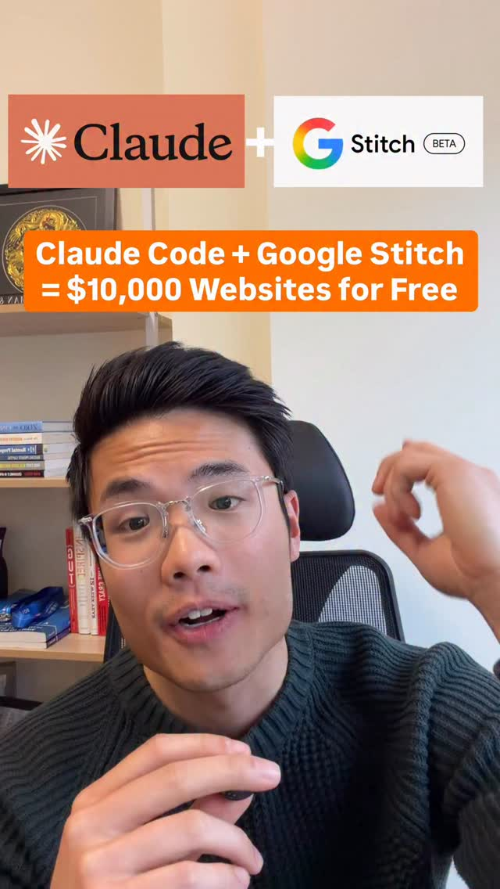

Claude Code × Google Stitch｜從 AI 介面草圖到前端實作的「vibe design」工作流
來源是 Taki Wong 的 Facebook Reel。貼文主張：很多人想用 AI 做網站，但結果容易變成「AI slop」；若把 Claude Code 與 Google Stitch 結合，就能把網站設計提升到更像專業設計案的層次。貼文文案寫到「Comment “Claude” and I’ll send you the full Claude guide」，因此這是一則以教學名單/私訊漏斗包裝的 AI 網頁設計工作流短影音。

一句話摘要
這則 Reel 值得保存的核心不是「免費做出 1 萬美元網站」這個行銷式標語，而是它指出一個實用分工：Google Stitch 負責快速探索高擬真 UI 與前端程式碼方向，Claude Code 負責把設計方向落到可維護的專案、元件、測試與部署流程。
Facebook 可擷取資訊
| 欄位 | 內容 |
|---|---|
| 作者 | Taki Wong |
| 形式 | Facebook Reel / video |
| 可見觀看 | 約 2.4 萬次觀看 |
| 可見互動 | 3,009 個心情、約 1,691 則留言、330 次分享/互動（Facebook 頁面快照） |
| 主要文案 | Follow me for more valuable AI content. Everyone wants to create a website using AI but most sites end up looking like AI slop. But if you combine Claude Code and Google Stitch you will take your website designs to the next level so they look like they cost $10,000 from a professional designer. |
| CTA | Comment “Claude” and I’ll send you the full Claude guide. |
| Hashtags | #ai #claude #aiforbusiness |
| 封面文字 | Claude + Google Stitch Beta；Claude Code + Google Stitch = $10,000 Websites for Free |
封面與影片可見資訊
Facebook 登入牆遮住大部分 Reel，因此本次可完整保存的是 OpenGraph metadata 與封面圖。封面可見 Claude 標誌、Google Stitch Beta 標誌，以及橘色標語「Claude Code + Google Stitch = $10,000 Websites for Free」。畫面沒有可辨識的 API key、帳號、客戶資料或敏感個資；人物為公開影片作者畫面。
官方查核：Google Stitch 的定位
Google Stitch 官方頁將 Stitch 描述為可為 mobile 與 web applications 生成 UI、加速 design ideation 的 AI 工具。Google Developers Blog 在《From idea to app: Introducing Stitch, a new way to design UIs》中說明，Stitch 是 Google Labs 實驗，可從文字 prompt 或圖片輸入，在幾分鐘內生成 UI designs 與 frontend code，並支援快速迭代、貼到 Figma 與取得前端程式碼。
Google Blog 後續文章《Design UI using AI with Stitch from Google Labs》則把它放在「vibe design」脈絡：Stitch 正演進成 AI-native 平台，讓使用者建立、迭代、協作高擬真 UI；新版介面包含 AI-native canvas，可從早期 idea 延伸到 working prototypes。
因此，Reel 中「用 Google Stitch 提升網站設計」這個方向有官方基礎；但「看起來像 $10,000 專業網站」屬作者行銷說法，不是 Google 官方保證。
官方查核：Claude Code 的角色
Anthropic 官方 Claude Code 產品頁與文件確認：Claude Code 是 agentic coding tool，可讀取 codebase、編輯檔案、執行命令、整合開發工具，並能在 terminal、IDE、desktop app、browser 等環境使用。官方描述也包含 Git/GitHub workflow、running tests、提交 PR、MCP、CLAUDE.md、skills 與 hooks 等工程化能力。
這意味著 Claude Code 更適合扮演「工程落地」角色：把 Stitch 產生的方向、HTML/CSS/React 片段或設計規格，整理成專案結構、元件、樣式系統、路由、資料模型、測試與部署腳本。
可落地的雙工具流程
| 階段 | 工具 | 產出 | 風險控管 |
|---|---|---|---|
| 需求描述 | 人 + Claude / ChatGPT | 受眾、品牌語氣、頁面目的、內容區塊 | 先寫清楚商業目標，不要只說「做高級網站」 |
| UI 探索 | Google Stitch | 多版 web / mobile UI、高擬真畫面、前端 code 方向 | 產生多個方向後人工挑選，不要只用第一版 |
| 設計整理 | Stitch + Figma / 文件 | 色彩、字體、spacing、元件狀態 | 檢查可讀性、響應式、無障礙與品牌一致性 |
| 工程落地 | Claude Code | React / Next.js / HTML 專案、元件化、檔案整理 | 要求 Claude Code 跑 lint/test/build，逐步 commit |
| 上線驗證 | Claude Code + 人工 QA | 部署、截圖、連結、表單測試 | 檢查 SEO、效能、表單安全、隱私政策與追蹤碼 |
給課程與顧問案的保存價值
這則短影音適合作為「AI 不是只會生成網頁，而是要建立設計到工程的分工流程」案例。對欒帥的課程可拆成一個 45–60 分鐘練習：
- 用一句話定義 landing page 目標。
- 讓 Stitch 產生 3 個不同視覺方向。
- 讓學生挑一版並寫出修改意見。
- 把設計規格交給 Claude Code 落成可跑的頁面。
- 用 checklist 驗證：響應式、CTA、可讀性、表單、圖片替代文字、部署連結。
風險與限制
- 「$10,000 Websites for Free」是社群影片標語，不代表免費工具可穩定替代專業設計師、前端工程師或品牌策略。
- Stitch 仍是 Google Labs / beta 脈絡產品，功能、額度、輸出格式與可用地區可能變動。
- AI 產生的 UI 可能漂亮但不符合品牌、法規、無障礙、轉換率或真實內容需求。
- Claude Code 能執行命令與改檔，使用時需限定 repo、審核 diff、避免把密鑰或客戶資料放入 prompt。
- 若影片完整 guide 只透過留言/私訊提供，本次歸檔不應推測其未公開步驟；只保存公開 metadata、封面與官方查核後的可行流程。
來源
- Facebook Reel：Taki Wong，Claude Code + Google Stitch 網站設計短影音。
- Google Stitch 官方頁：Stitch - Design with AI。
- Google Developers Blog：From idea to app: Introducing Stitch, a new way to design UIs。
- Google Blog：Design UI using AI with Stitch from Google Labs。
- Anthropic / Claude：Claude Code product page。
- Claude Code Docs：Overview。